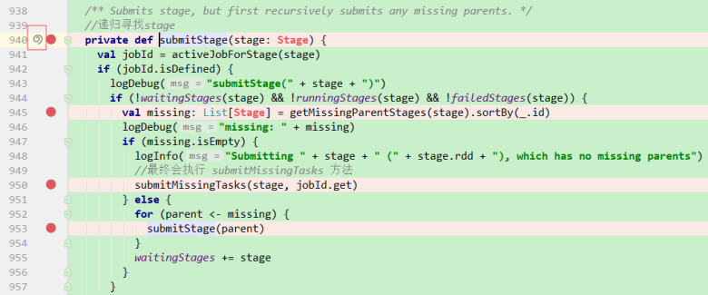

文字分析：
2个重要的方法createResultStage和submitStage
private[scheduler] def handleJobSubmitted(jobId: Int, |
如果当前RDD的依赖中有shuffle依赖，就添加到parents，如果不是shuffle依赖，就把其父辈的不是shuffle的RDD加入到waitingForVisit中
因为是行动算子触发的此方法，所以当前RDD就是DAG中最后一个RDD
RDD只有父的概念没有子，所以只能从后往前推，因为DAG是单向的
当前WC的例子中，shuffleRDD只有一个，放在了parents中，剩下的都放在了waitingForVisit
createShuffleMapStage，会创建一个ShuffleMapStage的对象，这个stage会将之前只有直接父辈依赖的lineage补全，然后创建一个完整的stage
ShuffleMapStage表示这个stage是映射的全是窄依赖的stage，stage本来就只有窄依赖。

(1) getOrCreateShuffleMapStage(shufDep, stage.firstJobId)就是创建宽依赖的stage
(1) 提交后，根据stage的不同（result或shuffleMap），切分成不同的task，封装成taskset的方式调用TS的submitTasks提交